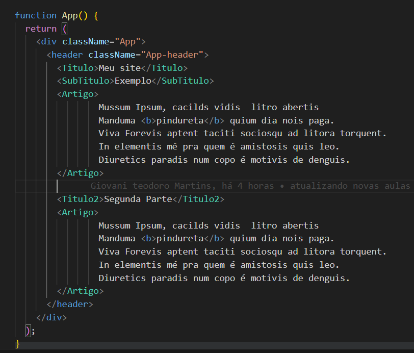

Voltar para a página anterior POST CSS
Ir para a próxima página P
Componentes Estilizados
styled components
É uma biblioteca para React/React Native,
que permite o uso de estilos a nivel componentes.
É baseado em JavaScript com CSS.
Principais vantagens:
* Evita erros de nomes de classe.
* Exclussão mais fácil de CSS:
-> Se excluir um componente não usado, todos os seus estilos serão excluidos juntos.
* Há uma ferramenta para detectar se o componente está ou não sendo usado.
* Fácil manutenção.
Principais Vantagens
* Evita erros de nomes de classes, tem nomes exclusivo para cada estilo.
* Para excluir é muito mais fácil,...
* Fácil manutenção.
* Só injeta os estilos necessário, ou seja diminui a quantidade de código carregado.
-> isso quando o usuário abrir a página.
* Adaptação de estilo de um componente bem é simples e intuitivo,
sem precisar gerenciar vários lugares, dezenas de classes.
Vamos instalar usando o Node.js, tem que está na versão acima da 9.
Verifique se você possui o Node.js e npm, instalado em seu computador.
No Vscode, abra uma pasta, depois abra o terminal do VScode e digite esses comandos: Instalar usando o NPM
npm install create-react-app
dê enter e vai começar a instalar .
* Criação do Projeto, use um dos dois comandos para criar o projeto: npm init react-app *meu-app
*nome do seu projeto.
npx create-react-app *meu-app
*nome do seu projeto.
* Instalando o styled components:
-> Importante verificar se você está dentro da pasta do seu projeto.
npm install styled-components
* Para rodar/iniciar o projeto: npm start
* Para Fechar a conexão, encerrar o projeto: ctrl + c teclas control + C
Como usar o Styled Components
** Exemplo de uso:
// Para importa import styled from 'styled-components';
// Declara a variável, será constante por que não terá alteração. const Title = styled.h1`
_____color: red; => vai receber essa cor `; * lembre-se desses sinais, é -> `` e -> ;
// Na hora de usar, você vai usar ela como uma tag < Title > Página 01 < /Title >
Vamos ver isso na prática com ajuda de imagens do código:
* Primeiro vamos importa o styled no arquivo App.js
* Criar um exemplo simples de uma página HTML:
Veja o exemplo na imagem abaixo:

Note que as tags possui nomes diferentes do que normalmente é colocado, serão variáveis.
Agora vamos declarar as variáveis, do tipo const constante.
Veja o exemplo na imagem abaixo: